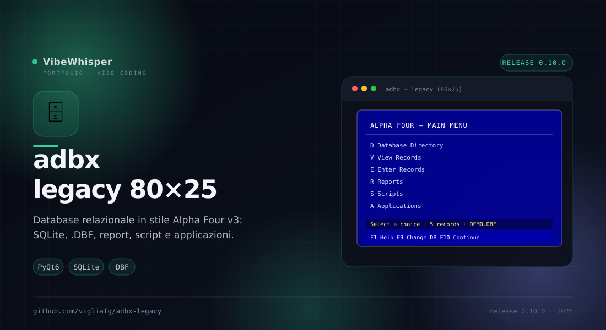

adbx-legacy
Clone funzionale di Alpha Four versione 3 (Alpha Software, 1993) nella variante a 80×25 celle: un database relazionale completo — regole di campo, set, form, report, etichette, lettere, script e applicazioni — con motore SQLite, file .DBF interoperabili e finestra moderna.
📖 Cos'è
adbx-legacy è la variante a 80×25 della linea adbx: riporta la finestra alla griglia del modo testo DOS — 80 colonne e 25 righe, con area di lavoro, status line, help line e menu line — ma la disegna con un font TrueType scalabile (DejaVu Sans Mono) e uno zoom da 50% al 200%. Sotto c'è un motore SQLite; i file .DBF restano leggibili e scrivibili, quindi gli archivi storici non vanno convertiti. Il prodotto non emula il DOS: replica il comportamento di Alpha Four, non il suo hardware.
👤 A chi serve
A chi ha usato Alpha Four e vuole ritrovare il suo modo di lavorare — database directory, menu a lettere, regole dichiarative, report — su un computer di oggi. A piccoli studi e archivi che devono consultare o aggiornare dati in .DBF senza cloud né abbonamenti. A chi cerca un database desktop senza scrivere SQL, ma anche a chi vuole studiare come un'app del 1993 può essere ricostruita con test automatici e un motore moderno.
⚙️ Come funziona
All'avvio compare il banner con l'ultimo database o set usato; F10 prosegue, F9 apre il Database Directory. Ogni database è una cartella con il file .DBF e i suoi metadati: struttura dei campi, indici, range, regole, form, report, etichette, lettere e applicazioni. Le regole di campo coprono default, incrementi, template, maschere, valori obbligatori, validazione, doppia immissione, skip, campi calcolati, lookup table/database/cascading e post-data. I set legano più tabelle con relazioni First/Last/Closest/All e controllo di integrità. Il motore di report gestisce nove gruppi, summary e multipass, con anteprima e PDF; le etichette e le lettere hanno giustificazioni e condizionali. Gli script coprono il capitolo 18 del manuale con 22 trigger, variabili %SYS_*, dialog box, menu bar, debugger e AUTOEXEC; le applicazioni hanno editor a outline, parametri, banner, macro e protezione dei file di supporto.
💾 Download e installazione
La release 0.10.0 è pubblicata su
GitHub Releases
con i checksum in SHA256SUMS.txt. Ogni pacchetto contiene l'applicazione completa: Python, Qt e i font sono inclusi, non serve installare nulla.
| Piattaforma | File | Uso |
|---|---|---|
| Windows 10/11 x64 | setup.exe · 26 MB | Installer NSIS: collegamenti, disinstallatore, voce in App e funzionalità |
| Windows 10/11 x64 | portable.zip · 36 MB | Scompattare e avviare adbx-legacy.exe |
| macOS Apple Silicon | macos-arm64.dmg · 30 MB | Trascinare adbx-legacy.app in Applicazioni |
| Debian / Ubuntu x86_64 | adbx-legacy_0.10.0_amd64.deb · 54 MB | sudo apt install ./file.deb |
| Linux x86_64 | x86_64.AppImage · 64 MB | chmod +x e avvio, senza installazione |
| Linux x86_64 | x86_64.tar.gz · 70 MB | Archivio portabile |
| Tutte | SHA256SUMS.txt | Verifica dei download |
I pacchetti non sono firmati: su Windows SmartScreen chiede Ulteriori informazioni → Esegui comunque; su macOS serve tasto destro → Apri oppure:
xattr -dr com.apple.quarantine /Applications/adbx-legacy.app
# Debian / Ubuntu sudo apt install ./adbx-legacy_0.10.0_amd64.deb adbx-legacy # AppImage chmod +x adbx-legacy-0.10.0-linux-x86_64.AppImage ./adbx-legacy-0.10.0-linux-x86_64.AppImage # Windows portabile # Scompattare l'archivio e avviare adbx-legacy.exe
La cartella dati dell'app installata è quella utente:
%APPDATA%\adbx-legacy su Windows,
~/Library/Application Support/adbx-legacy su macOS,
~/.local/share/adbx-legacy su Linux. Le variabili
ADBX_DATA e l'opzione --data la sovrascrivono.
✨ Caratteristiche principali
- Griglia 80×25 — La geometria dell'originale, con font scalabile e zoom 50–200% salvato in
config.json - SQLite + DBF — Motore relazionale moderno e file Alpha Four interoperabili
- Table designer — Campi, tipi, maschere, indici, range, regole e lookup dalla finestra
- View / Enter / Change / Browse — Cancellazione logica, Find, Locate e Replace
- Regole di campo complete — Default, incrementi, template, required, validation, double entry, skip, calcolati, post data
- Set e relazioni — Link First/Last/Closest/All, integrità, cascading e regioni 1:N
- Report, etichette e lettere — Nove gruppi, summary 7×3×4×2, multipass, anteprima e PDF
- Script e applicazioni — Keystroke, dialog box, menu bar, 22 trigger, debugger e macro
- Utility e I/O — Copy, append, summarize, pack, zap, crosstab, join, global update e dieci formati di import/export
📦 Dal sorgente
git clone https://github.com/vigliafg/adbx-legacy.git cd adbx-legacy ./start.sh # crea .venv e installa PyQt6 alla prima esecuzione ./start.sh --smoke # verifica headless: griglia 80x25 e digest ./start.sh --data ~/dati # parte dalla cartella indicata
💡 Casi d'uso
- Archivi storici — Aprire e aggiornare database
.DBFsenza convertirli - Gestionale su misura — Tabelle, regole, set e report per inventari, soci, corsi, collezioni
- Retrocomputing — Studiare e usare un'app del 1993 ricostruita con test e PDF
- Didattica — Un percorso guidato in 25 lezioni dal database directory alle applicazioni